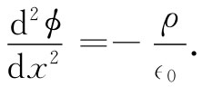
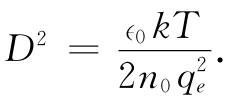
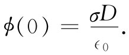

现在，我们转到各电荷的位置受这些电荷的一部分产生的势所控制着的另一种现象。这样产生的效应对于胶体的行为有着重要影响。胶体由水中的带电悬浮物构成，这些带电微粒尽管微小，但从原子的观点看却已十分巨大。要是这些微粒不带电，它们将有凝聚成一大块的倾向。但由于带电，就将互相排斥，并保持悬浮状态。
现在，如果有某种盐也溶解于水中，则它将分解成正负离子（像这样的离子溶液称为电解质）。那些负离子会被胶体微粒所吸引（假定微粒带的是正电），而正离子则被推开。我们要确定围绕着胶体微粒的那些离子在空间是怎样分布的。
为保持概念简单，我们还是仅仅求解一维情况。如果把一胶体微粒看成一个具有巨大半径的球——在原子尺度上！——那么，便可以把它表面的一小部分看成平面（每当试图理解一个新现象时，取一个有些过于简化的模型总是一个好主意。于是，用这个模型弄通了这个问题之后，才能更好地进行较精确的计算）。
假定那些离子的分布会产生一个电荷密度ρ（x）和一个电势ϕ，这两者的关系遵守静电学定律▽2 ϕ=-ρ/∈0 ，或者，对于仅在一维情况下变化着的场，则遵守
 （7.28）
现在假定已有这么一个势ϕ（x），那么离子将怎样分布在其中呢？这可以通过统计力学的原理来确定。于是，我们的问题就是要确定ϕ，使得从统计力学所获得的电荷密度也 能满足式（7.28）。
按照统计力学（参阅第1卷第40章），在一个力场中处于热平衡的粒子是这样分布的，即在位置x处的粒子密度n由下式给出
n（x）=n0 e-U（x）/kT ， （7.29）
式中U（x）为势能，k为玻尔兹曼常量，而T为绝对温度。
假定每一离子带有正的或负的一个电子的电荷。在离胶体微粒的表面为x的地方，一个正离子将有势能qe ϕ（x），因而
U（x）=qe ϕ（x）.
这样，在该处的正离子密度就是
把上式与式（7.28）相结合，我们发现势ϕ必须满足
这个微分方程可立即得到一个通解［两边各乘以2（dϕ/dx），并对x积分］，但为了尽可能保持问题简单，我们在这里仅考虑电势ϕ很小或温度T很高的那种极限情况。ϕ小的情况相当于稀溶液。在这些情况下，该指数很小，因而可做如下近似：
注意！这时上式右边的符号已经是正的了。ϕ的解就不再是振动式的，而是指数式的。
方程式（7.33）的通解为
ϕ=Ae-x/D +Be+x/D ， （7.34）
式中
 （7.35）
常数A和B必须由问题的条件确定。在上述情况下，B应为零，否则对于大的x值电势将趋于无限大。因此，我们有
ϕ=Ae-x/D ， （7.36）
式中A是在x=0处，也即在胶体微粒表面处的电势。
每当距离增大D时，势就降低一个因子1/e，如图7-7的曲线所示。数值D称为德拜长度 ，它是对电解质中包围一个巨大带电粒子的离子层厚度的一种量度。式（7.35）表明，当离子浓度n0 增加或当温度降低时，这离子层就变薄。
图7-7 在一胶体微粒表面附近电势的变化情形，D为德拜长度
如果已知胶体微粒的表面电荷密度σ，那么式（7.36）中的常数A就可以容易获得。我们知道
把这一结果应用于式（7.36）中，便得到（通过取x=0）该胶体微粒的电势为
 （7.40）
你会注意到，这一个势与面电荷密度为σ而两板间距为D的电容器的电势差相同。
我们已经讲过，胶体微粒受它们之间电的排斥作用而得以保持分离。但现在我们见到，稍微离开胶体微粒表面的场会由于聚集在微粒周围的离子层而被削弱。如果这些离子层变得相当薄，则这些微粒便有较大机会互相对撞。于是它们会粘住，而胶体便会凝聚在一起并从液体中淀积出来。从上面的分析我们明白，为何对一胶体加进足够的盐类就会使它沉淀出来。这一过程称为“胶体的加盐萃取”。
另一个有趣例子则是盐溶液对于蛋白质分子的影响。一个蛋白质分子乃是一条既长而又可挠曲的复杂的氨基酸链。在这种分子上面存在各种电荷，而有时碰巧有一些净电荷——比如说负电荷——会沿该链分布着。由于各负电荷的相互排斥，所以蛋白质链便会保持拉长的姿态。并且，若溶液中还有其他相似的链存在，则由于同样的排斥效应，它们会保持彼此分开。因此，在一液体中可以有链状分子的悬浮物。但如果我们加盐于该液体中，则会改变悬浮物的特性。当盐加进溶液中时，德拜长度会缩短，链状分子能够互相靠近，并蜷缩起来。如果加进溶液中的盐足够多，链状分子便可以从溶液中淀积出来。有许多这类化学效应都可以用电力来加以理解。